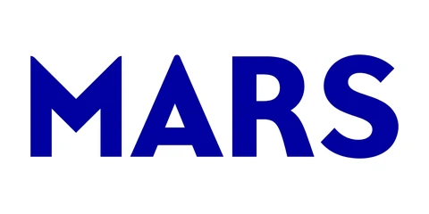
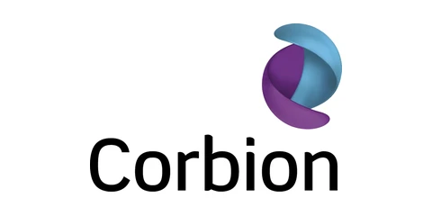
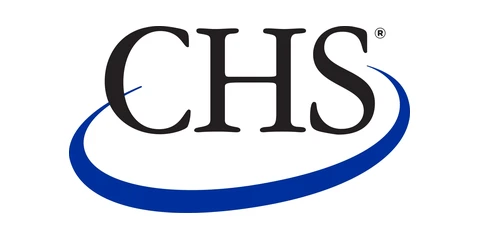
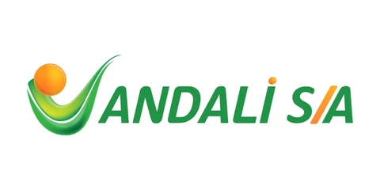
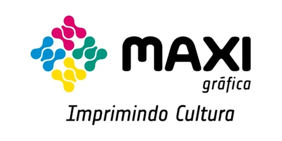

Consultoria em Excelência Operacional para aumentar a eficiência, reduzir perdas e custos e criar resultados que se sustentam. Com a experiência de quem implantou TPM e WCM em grandes indústrias.
Em um mercado competitivo, a diferença entre as empresas está na forma como a operação funciona: quanto se perde, quanto se produz com o mesmo recurso e quão rápido os problemas são resolvidos.
A ACK leva à sua empresa as metodologias mais consolidadas da indústria, Lean, TPM e WCM, de forma prática e no ritmo da sua realidade. Nós trabalhamos lado a lado com o seu time até o método virar rotina.

Os principais temas que trabalhamos. O projeto combina as frentes de acordo com o diagnóstico.
Avaliamos o sistema de excelência operacional da empresa, mapeamos as oportunidades e montamos o plano de correção e implantação.
Implantação das 12 etapas e dos 8 pilares, no modelo que o cliente escolher, com preparação para premiações JIPM.
Planejamento e controle da manutenção, rotina e indicadores, planos de manutenção e projetos de redução de quebras.
Implantação dos pilares técnicos e gerenciais, com o sistema ajustado à necessidade de cada planta.
Projetos de redução de desperdícios com as ferramentas certas para cada problema.
Desdobramento da estratégia até o nível operacional, gestão visual e tratamento de desvios.
Diagnóstico de perfis, coaching de líderes e gestão da mudança para sustentar a transformação.
Ver treinamentos →Mapeamento de processos logísticos, redução de estoques e de movimentação, picking e implantação de WMS.
Lean Office e Lean Service, gestão de processos (BPM) e melhoria de processos administrativos.
Do entendimento do negócio à transformação dos processos, sempre com o seu time envolvido.
Imersão na estratégia, nos indicadores e nos processos de produção, qualidade, manutenção e logística.
Definimos com o cliente os grupos de perdas a atacar e os métodos de excelência mais adequados.
As iniciativas sugeridas são revisadas e ajustadas à experiência e à necessidade da empresa.
Plano detalhado por ondas, combinando gestão de projetos tradicional e ágil.
Atuamos junto com a equipe, treinando, acompanhando e corrigindo rotas até o resultado aparecer.
O Assessment Industrial mapeia perdas, monta o baseline de custos e mostra a curva de captura de resultados para os próximos 12 meses.
Conhecer o assessmentEmpresas que confiam na ACK





Se a sua pergunta não estiver aqui, chame a gente no WhatsApp.
Ver todas as perguntasCom uma imersão na empresa: entrevistas com a diretoria, leitura dos indicadores e visita ao chão de fábrica. Esse diagnóstico mostra onde estão as perdas e qual método faz mais sentido para a sua realidade.
O Lean ataca desperdícios no fluxo de valor. O TPM foca na eficiência dos equipamentos e no envolvimento de toda a equipe na manutenção. O WCM integra pilares técnicos e gerenciais num sistema completo de classe mundial. Muitas vezes combinamos os três.
Os mais comuns são aumento de eficiência (OEE), redução de quebras, perdas e custos, menos tempo de setup, mais qualidade e segurança e uma cultura de melhoria contínua que se mantém depois do projeto.
Sim. Conduzimos a implantação das 12 etapas e dos 8 pilares do TPM e preparamos a planta para as auditorias de premiação do JIPM.
Atuamos em manufatura e serviços, como embalagens, papel e celulose, alimentos, bebidas, personal care e logística. Atendemos todo o Brasil e a América Latina, com unidades em Curitiba, São Paulo, Porto Alegre e Asunción.
Fale com um consultor da ACK e dê o primeiro passo para transformar os resultados da sua empresa.